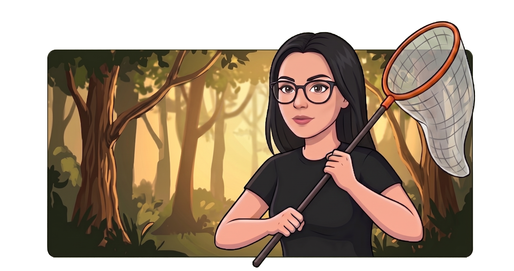

⠀Я верю, что софт, как и любой организм, должен быть здоровым. Там, где другие видят сухие строчки кода, я вижу живой процесс.
💻 Мой Стек
Core QA & Processes
- Manual Testing
- Test IT
- Jira / Trello / Яндекс Трекер
API & Databases
- REST / Swagger
- Postman
- PostgreSQL / DBeaver / MongoDB
- Apache Kafka
Web & Diagnostics
- DevTools
- Charles
- Sentry / Kibana / Grafana
- Basic JS / HTML / CSS
Automation & Infrastructure
- Python / Requests / Pytest
- Cypress
- Docker
💼 Опыт работы
Старший инженер мониторинга и технической поддержки
Наука-Связь | Март 2023 — Настоящее время
Ключевые обязанности:
- Тестирование и верификация:
Проведение функционального тестирования внутренних сервисов компании и систем мониторинга после обновлений. Проверка корректности работы клиентских сервисов после устранения инцидентов (регрессионное тестирование на уровне пользователя). - Управление инцидентами:
Полный цикл обработки обращений от VIP-клиентов (B2B, B2O, B2G). Локализация проблем, регистрация багов в системе трекинга и контроль их исправления. - Мониторинг и контроль качества:
Непрерывный мониторинг состояния сети и качества работы ВКС в периоды пиковых нагрузок и аварий. Анализ работы внешнего контакт-центра: контроль соблюдения стандартов, аудит звонков и формирование отчётности по качеству. - Аналитика и диагностика:
Сбор и систематизация логов/данных для эскалации сложных технических проблем на уровень руководства и профильных отделов. Поиск первопричин повторяющихся сбоев. - Оптимизация процессов:
Организация и администрирование учётных записей в TTC, настройка прав доступа и оптимизация взаимодействия между техническими отделами. - Technical Writing & Communication:
Ведение технической переписки на английском языке, сопровождение иностранных партнёров и англоговорящих клиентов.

Для меня баг — это не просто ошибка, а симптом, мешающий системе правильно дышать и развиваться. Я делаю цифровой мир чище, превращая вчерашние уязвимости в фундамент, на который можно опереться!
💡 Мои проекты
Тестирование редактора книг и конструктора проектов
(Школа дизайна НИУ ВШЭ)
Задачи и выполненные работы:
- Тест-дизайн и планирование:
Разработка и реализация подробного регрессионного чек-листа для модуля «Редактор книг», включая сложную логику «Книги на продажу». - Функциональное тестирование:
Проверка конструктора глав, модальных окон настройки тарифов и механизмов защиты изображений. - Peer Review:
Активное участие в верификации баг-репортов коллег (более 20 ревью). Подтверждение дефектов и уточнение условий воспроизведения. - Кроссплатформенная проверка:
Тестирование вёрстки и функционала на Retina-дисплеях (2560x1600) в Safari и Chrome под управлением macOS и iOS. - Работа с критическими дефектами:
Выявление 9 дефектов, среди которых 2 блокера: фатальный сбой приложения (ReferenceError) и блокировка функций редактирования уже созданного контента.
Результат:
Успешное завершение 56 часов интенсивной практики. Один из найденных критических блокеров был исправлен командой немедленно после фиксации, что позволило продолжить разработку модуля без задержек.
Тестирование корпоративного мессенджера
(на базе Matrix Synapse)
Задачи и выполненные работы:
- API Testing:
Проверка базовых запросов через Postman. Проверка ответов сервера при создании чатов, добавлении пользователей и отправке сообщений. - Функциональное тестирование:
Проверка корректности работы мессенджера в браузере и десктоп-приложении. Тестирование отправки файлов, отображения статусов и работы уведомлений. - Работа с DevTools:
Диагностика ошибок в консоли и мониторинг сетевых запросов при возникновении проблем с загрузкой медиафайлов или отправкой сообщений. - Кроссплатформенная проверка:
Верификация работы клиента на разных операционных системах (Windows, macOS) для выявления несоответствий в интерфейсе. - Работа с баг-репортами:
Описание найденных дефектов с чёткими шагами воспроизведения и ожидаемым результатом для передачи разработчикам.
Результат:
Повышение стабильности работы внутреннего сервиса. Улучшение процесса передачи информации об ошибках от поддержки к разработке, что ускорило исправление критических багов.
📜 Мои сертификаты
📧 Как со мной связаться
- Telegram: @lisa_ural
- Email: super.ale6ij@yandex.ru